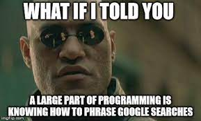

2 R Base
2.1 El proyecto Taller
Un proyecto es el marco en el cual realizás tu investigación o trabajo. Contiene los insumos, procesos y resultados. Empecemos por crear uno desde el menú: File/New Project, seleccionando el directorio de trabajo. Allí encontrarás un archivo con extensión R.proj. Creemos la carpeta de esta unidad, y también un script (File/New File/R Script) de extensión “.R”, que llamemos Unidad1.R, en el que seguiremos los contenidos y resolveremos los ejercicios.
Para conocer “donde estamos parados”, nuestro directorio de trabajo (working directory) se encuentra por default en la carpeta del proyecto:
2.1.1 Variables
Para adentrarnos en las características de R, censaremos un hogar. Pero… ¿qué es un hogar? Es una unidad de análisis demográfica, definida en un marco operativo censal: “se entiende por hogar una persona que vive sola o un grupo de personas que pueden o no estar emparentadas pero que comparten el presupuesto para los gastos de alimentación” (ONU, 2011) (ojo, no confundir con vivienda y/o familia).
Resulta que nos fue asignada determinada vivienda, con un solo hogar. Al llegar a la cuadra vemos lo siguiente…
Figure 2.1: Fuente: https://www.economist.com/books-and-arts/2020/04/16/a-lively-and-enlightening-history-of-the-census
Por suerte nos fue asignada la siguiente vivienda. Son 6 miembros. ¿Cómo se listan los miembros de un hogar en un formulario censal?
Figure 2.2: fuente: en base a https://www.indec.gob.ar/indec/web/Nivel3-Tema-2-41
Una vez completado el formulario persona para cada miembro, nos retiramos dando las gracias y nos sentamos a inspeccionar las características del hogar en R. Para esto empezaremos con los atributos del jefe o persona de referencia: Horacio .
La asignación de variables (y de todo tipo de objeto) se realiza mediante el operador (veáse la direccionalidad objeto valor).
Es recomendable no nombrar objetos con números al inicio, y sin incluir coma u otros caracteres especiales. También pueden encontrar el uso de = para asignar. ¿Qué usar?
Para ver el contenido del objeto creado, podemos ejecutar su nombre en la consola, o desde el script pintando el objeto y presionando el botón Run (o ctrl+enter):
## [1] 63Las operaciones lógicas estan por detrás de la mayoría de los procesos que realizaremos en el taller. ¿Es de equivalencia la siguiente relación?
## [1] FALSE¿Es menor que…?
## [1] FALSEOtras operaciones lógicas son: >, <=, >=, != (distinto), etc. (luego veremos algunas más).
Las operaciones sin asignación no cambian el valor de la variable creada:
## [1] 73¡Atención! lenguaje sensible a mayúsculas:
## [1] TRUELos tipos de variable más relevantes son:
- numeric (decimales con “.”)
## [1] TRUE- character (string)
## [1] "character"- logic (verdadero/falso)
## [1] FALSE- date (fecha)
Mmm pero f_nacim es character (class(f_nacim)), por lo que deberíamos transformarlo. La función base para cambio de tipos comienza con as. Utilicemos el predictor de comando, a ver qué nos sugiere… (presiona “as.” para ver la lista desplegable de sugerencias). En este caso:
Fechas: si quisiéramos interpretar una fecha con el formato que utilizamos en Argentina, tendríamos que especificarlo:
f_nacim <- as.Date("01/01/1960", format = "%d/%m/%Y").
Por suerte hay paquetes como lubridate que nos harán las cosas más fáciles. Lo veremos en unidades siguientes.
La ausencia de valor se representa con NA (missing/vacío):
## [1] TRUETu yo del futuro, otros humanos y múltiples computadoras leerán tu código: hablemos de algunas buenas practicas (aquí algunas).
2.1.2 Actividad
El hogar que te fue asignado tambien tiene un jefe/a o persona de referencia. Te proponemos lo siguiente:
Crear los atributos
nombre,sexo,edad,f_nacim.El censo lo respondió otra persona. Asigna un valor a
autoRespondente.Crear la variable
edad_en_10_añosque tenga la edad cumplida en 10 años. Corroborar que no son equivalentes.Obtener la diferencia entre ambas edades:
edad_en_10_años - edad_hoy.
2.2 Vectores
Es la estructura de datos más simple en R. Un vector es un arreglo de elementos del mismo tipo (podes comprobarlo). Inicializamos un vector combinando elementos mediante c(…). Por ejemplo c(1,2,3). Las variables son vectores de 1 elemento.
Creemos los vectores de atributos de los miembros del hogar censado, cuyo orden refiere a cada unidad de análisis persona:
nombre_jefe <- "Horacio"
nombre_conyuge <- "José"
nombre_hijos <- c("Iván", "Facundo", "Cristian", "Florencia")
nombre <- c(nombre_jefe, nombre_conyuge, nombre_hijos) # unión de vectores mediante c(), los "apilo"
edad <- c(63, 60, 35, 32, 27, 27)
f_nacim <- as.Date(c("1960/01/01", "1961/11/05", "1985/11/08", "1987/01/21", "1993/10/23", "1993/10/24"))
sexo <- c("v", "m", "v", NA, "v", "m")
autoRespondente <- c(T, rep(F, 5)) # repetí un valor 5 veces
# ¿Acabo de "pisar" objetos? ¿Qué significa? ¿Qué tipo de objetos son? ¿Qué información contienen? Algunas funciones útiles de exploración…
## [1] "Date"## [1] 6## chr [1:6] "Horacio" "José" "Iván" "Facundo" "Cristian" "Florencia"## Min. 1st Qu. Median Mean 3rd Qu. Max.
## 27.00 28.25 33.50 40.67 53.75 63.00## [1] "v" "m" NA¿Cómo extraer información de un vector? con […]. Por ejemplo, el nombre de la cuarta persona listada en mi hogar.
## [1] "Facundo"¿Y de los tres últimos? Incluyo como referencia el vector de posiciones c(4,5,6).
## [1] "Facundo" "Cristian" "Florencia"## [1] "Facundo" "Cristian" "Florencia"Un aspecto muuuy útil de R: vectorizar operaciones. Por default aplica la operación a cada uno de los elementos de un vector, sin necesidad de loopear a lo largo del mismo. Veamos qué pasa con los operadores lógicos que vimos en las variables:
## [1] FALSE FALSE FALSE TRUE FALSE FALSE¿Qué personas tienen una edad menor a 33?
## [1] FALSE FALSE FALSE TRUE TRUE TRUE¡Pero decime los nombres che!
## [1] "Facundo" "Cristian" "Florencia"Podemos comparar internamente elementos de un vector. ¿Qué estamos preguntando aquí?
## [1] FALSE TRUE TRUE TRUE TRUE TRUEMás sobre extracción de elementos de un vector:
¿En qué orden fui listado yo?: which(nombre=="Iván")
¿Quiénes me caen bien? Puedo usar un operador lógico para excluir una posición (y dejar el resto).
Todos menos Cristian:
nombre[nombre!="Cristian"]
Otra forma de verlo, en dos pasos:
posicion_de_Cristian <- which(nombre=="Cristian")
nombre[-posicion_de_Cristian]
Medidas resúmen útiles sobre vectores numéricos:
## [1] 40.66667## [1] "1960-01-01"## [1] 27 63Antes de continuar: si queremos reemplazar por ejemplo f_nacim por fecha_nacim, podemos utilizar lo que nos ofrece RStudio para buscar y reemplazar (con CRTL+f ) recreando el objeto desde el inicio, o crear un vector idéntico (y eliminar el anterior).
fecha_nacim <- f_nacim
# remover (bienvenido si no quieres ir dejando basura pesada por allí)
rm(f_nacim) Ayuda!!!
Se puede pedir ayuda consultando la documentación de las funciones:?range o help(range). Y muy probablmente alguien ya se topó con tu problema:

2.2.1 Actividad
Considerando el hogar de Horacio, responder:
¿Qué valores únicos tiene la variable
autoRespondente?¿Cuales son los nombres de las personas que censé con una edad mayor a 50?
¿En qué fecha nació Florencia?
Toma 4 personas que conozcas e incorpóralos como miembros de tu hogar: crear los vectores de atributos
nombre,sexo,edadyfecha de nacimientode los miembros del hogar del grupo. Tener en cuenta el orden .¿Cómo se llama la segunda persona listada? Obtener el nombre utilizando corchetes
[].Obtener el rango de la edad de los miembros del hogar y su promedio. Para lo primero se puede usar
minymaxo directamente la funciónrange.Mediante
Sys.Date()se puede ontener la fecha de hoy (guardarla en una variable si es preferible). Calcular la edad exacta de los miembros, al día de la fecha, de la siguiente manera:(fecha_hoy - fecha_nacim)/365(restamos fechas y las convertimos en años de manera aproximada).¿Y la edad cumplida de los miembros cuál es? ¿El respondente informó correctamente la edad de todos los miembros?
Con la función
nchar()podés obtener el largo de un texto. ¿Cuál es el nombre más largo?
2.3 Data.frames
El objeto más flexible en R es el data.frame: permite combinar múltiples variables de distintas clases, símil a las tablas que tratamos en otros softwares estadísticos o excel. Organicemos los atributos de los miembros de mi hogar en un data.frame:
## nombre sexo edad fecha_nacim autoRespondente
## 1 Horacio v 63 1960-01-01 TRUE
## 2 José m 60 1961-11-05 FALSE
## 3 Iván v 35 1985-11-08 FALSE
## 4 Facundo <NA> 32 1987-01-21 FALSE
## 5 Cristian v 27 1993-10-23 FALSE
## 6 Florencia m 27 1993-10-24 FALSE¿Características?
## [1] "data.frame"## 'data.frame': 6 obs. of 5 variables:
## $ nombre : chr "Horacio" "José" "Iván" "Facundo" ...
## $ sexo : chr "v" "m" "v" NA ...
## $ edad : num 63 60 35 32 27 27
## $ fecha_nacim : Date, format: "1960-01-01" "1961-11-05" ...
## $ autoRespondente: logi TRUE FALSE FALSE FALSE FALSE FALSE## nombre sexo edad fecha_nacim
## Length:6 Length:6 Min. :27.00 Min. :1960-01-01
## Class :character Class :character 1st Qu.:28.25 1st Qu.:1967-11-06
## Mode :character Mode :character Median :33.50 Median :1986-06-15
## Mean :40.67 Mean :1980-05-24
## 3rd Qu.:53.75 3rd Qu.:1992-02-14
## Max. :63.00 Max. :1993-10-24
## autoRespondente
## Mode :logical
## FALSE:5
## TRUE :1
##
##
## ## [1] "nombre" "sexo" "edad" "fecha_nacim"
## [5] "autoRespondente"## [1] 5## [1] 6Para verlo tipo excel puedes usar View(hogar) o directamente desde el tab Environment haciendo click en el objeto. La selección de variables en un data.frame puede realizarse de distintas maneras. Por ejemplo para la variable sexo:
## [1] "v" "m" "v" NA "v" "m"# Una vez dentro del vector, vale lo que vimos en la sección previa de vectores. ¿Cuál es el miembro con sexo sin valor?
hogar$nombre[is.na(hogar$sexo)]## [1] "Facundo"También podemos seleccionar datos mediante coordendas del tipo [fila, columna], o condicionado a la variable elegida.
## [1] 60## [1] 60## nombre sexo edad fecha_nacim autoRespondente
## 2 José m 60 1961-11-05 FALSE## [1] "v" "m" "v" NA "v" "m"Al crear el data.frame forzamos la no existencia de variables de tipo factor (stringsAsFactors = F). Los tipos de variable factor son variables categóricas (nominales u ordinales), con niveles (o códigos) y etiquetas (al estilo SPSS). Son muy relevantes para algunos paquetes que veremos más adelante, como ggplot2, para dar jerarquía al orden de visualización de las series. Por ejemplo, podemos crear la variable relación de parentezco rp respecto al jefe del hogar o persona de referencia.
hogar$rp <- factor(c("jefe", "cónyuge", "hije", "hije", "hije", "hije"))
# característica
class(hogar$rp)## [1] "factor"## Factor w/ 3 levels "cónyuge","hije",..: 3 1 2 2 2 2## [1] "cónyuge" "hije" "jefe"## [1] 3Al parecer el respondente fue el cónyuge. Hagamos el cambio seleccionando de la variable autoRespondete aquellla observación (persona) que sea:
hogar$autoRespondente[hogar$rp == "jefe"] <- FALSE # ¿Cómo se lee esto?
hogar$autoRespondente[hogar$rp == "cónyuge"] <- TRUE2.3.1 Actividad
A partir de los vectores creados en la actividad previa, generar un data.frame con los miembros del hogar.
Inspeccionar sus características.
Obtener todos los datos del segundo miembro listado con el uso de corchetes
[].Luego de una revisita al hogar encontramos que el tercer miembro listado prefiere que no conste su sexo, y que el cuarto miembro pefiere ser listado con su apodo “Pepe”. Hacer los cambios correspondientes.
Agregar una variable con el número de caracteres de cada nombre. Informar el promedio.
2.4 Listas
¿Te preguntarás si hay vida más allá del data.frame? Por supuesto, las listas. Una lista es una colección de objetos de cualquier tipo (incluidos los data.frame). Por ejemplo si el tercer miembro soy yo, Iván, y formo mi propio hogar dentro de la vivienda, el listado de hogares censado tendría dos data.frame:
hogar_1 <- hogar[-3,]
hogar_2 <- hogar[3,]
lista_de_hogares <- list(hogar_1 = hogar_1,
hogar_2 = hogar_2)
# inspecciono
str(lista_de_hogares)## List of 2
## $ hogar_1:'data.frame': 5 obs. of 6 variables:
## ..$ nombre : chr [1:5] "Horacio" "José" "Facundo" "Cristian" ...
## ..$ sexo : chr [1:5] "v" "m" NA "v" ...
## ..$ edad : num [1:5] 63 60 32 27 27
## ..$ fecha_nacim : Date[1:5], format: "1960-01-01" "1961-11-05" ...
## ..$ autoRespondente: logi [1:5] FALSE TRUE FALSE FALSE FALSE
## ..$ rp : Factor w/ 3 levels "cónyuge","hije",..: 3 1 2 2 2
## $ hogar_2:'data.frame': 1 obs. of 6 variables:
## ..$ nombre : chr "Iván"
## ..$ sexo : chr "v"
## ..$ edad : num 35
## ..$ fecha_nacim : Date[1:1], format: "1985-11-08"
## ..$ autoRespondente: logi FALSE
## ..$ rp : Factor w/ 3 levels "cónyuge","hije",..: 2Para acceder a un elemento de la lista utilizamos doble corchete:
## nombre sexo edad fecha_nacim autoRespondente rp
## 1 Horacio v 63 1960-01-01 FALSE jefe
## 2 José m 60 1961-11-05 TRUE cónyuge
## 4 Facundo <NA> 32 1987-01-21 FALSE hije
## 5 Cristian v 27 1993-10-23 FALSE hije
## 6 Florencia m 27 1993-10-24 FALSE hije# el nombre del miembro 3 del segundo hogar, mi antigua casa, ahora es:
lista_de_hogares[[1]]$nombre[3]## [1] "Facundo"# puedo utilizar también el nombre del objeto dentro de la lista, en vez de su posición:
lista_de_hogares[["hogar_1"]]$nombre[3]## [1] "Facundo"Una buena explicación sobre la estructura de selección la dió el mismísimo Hadley Wickham acá.
Estimados, considerando que no llego a fin de mes, decido incorporarme de nuevo a mi hogar natal, por lo que el hogar número 2 debe ser removido. ¿Cómo incorporo una nueva fila a un data.frame? Se puede utilizar rbind (r de rows, que tiene su primo cbind para unir columnas, con c de columns).
# junto los hogares
hogar_reunificado <- rbind(hogar_1, hogar_2)
# lo asigno de vuelta al hogar_natal original
lista_de_hogares[["hogar_1"]] <- hogar_reunificado
# borro de la lista el hogar independiente
lista_de_hogares$hogar_2 <- NULLY debo tener el mismo hogar que antes, pero ahora como elemento de un listado:
## List of 1
## $ hogar_1:'data.frame': 6 obs. of 6 variables:
## ..$ nombre : chr [1:6] "Horacio" "José" "Facundo" "Cristian" ...
## ..$ sexo : chr [1:6] "v" "m" NA "v" ...
## ..$ edad : num [1:6] 63 60 32 27 27 35
## ..$ fecha_nacim : Date[1:6], format: "1960-01-01" "1961-11-05" ...
## ..$ autoRespondente: logi [1:6] FALSE TRUE FALSE FALSE FALSE FALSE
## ..$ rp : Factor w/ 3 levels "cónyuge","hije",..: 3 1 2 2 2 22.4.1 Actividad
- Antes que cierres la puerta, el respondente te avisa que se alquila una pieza al fondo del terreno, donde vive Luis: varón, nacido el 3 de junio del 2000, en su hogar unipersonal. Incorporalo a la lista de hogares de al vivienda.
hogar_luis <- data.frame(nombre = "Luis", sexo = "v", edad = 23, fecha_nacim = "2000-06-03", autoRespondente = TRUE, rp = "jefe")- Al querer irte Luis te avisa que en verdad el colabora monetariamente con la comida diaria, y hasta cenan juntos por las noches. Probablemente sea mejor unificar todo en un solo hogar. Hazlo recordando eliminar el hogar unipersonal de Luis asignando NULL a ese elemento de la lista, o en todo caso creando un nuevo objeto
lista_de_hogaressin un segundo elemento (pisarlo).